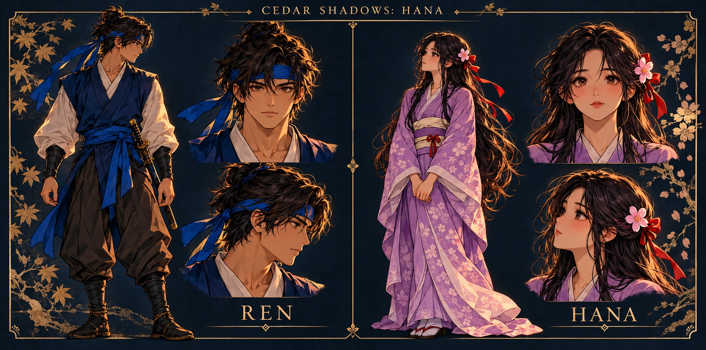

THE PROMISE
Ren
A young swordsman raised beneath the cedars. When the Ivory Order takes Hana, Ren follows without hesitation. His greatest struggle is to keep his father’s lesson alive: protect the person he loves without letting grief become hatred.
Twin blades · canopy traversal · a promise to bring her home
View full character sheet